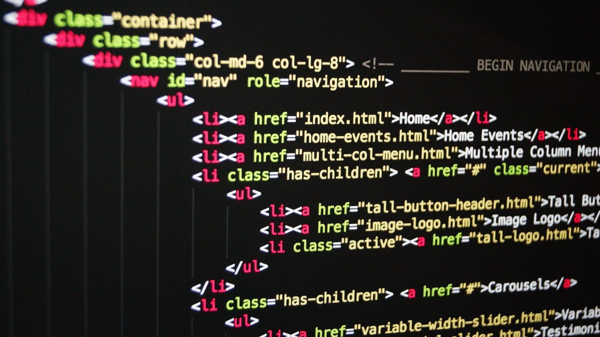
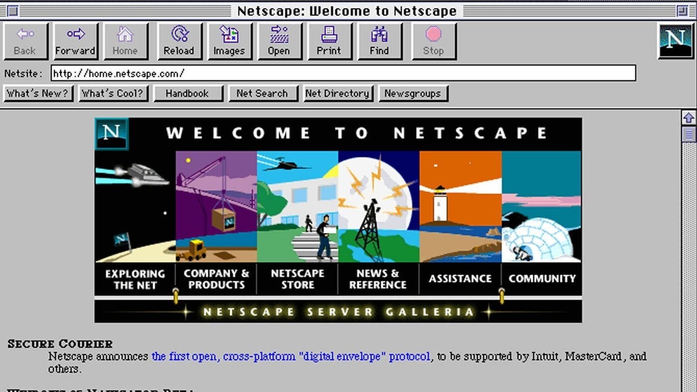

Html
: is the code that is used to structure a web page and its content
This website was coded in HTML
for the purpose of showing how easy creating a website could be. The following questions will be used to help guide our users thinking in the right direction when first learning to code in
HTML
.

HTML is the code that is used to structure a webpage and its content.
 HTML originated around the year 1990 as a language intended for the distribution of relatively simple structured documents. At the time html was best suitable for authors, scientist, academics and other early pioneers of the internet.
Html is used before CSS and JavaScript to lay down the foundation of the website, in this early stage of web development text, pictures, links,and graphs among other things can be shown on a simple web page like the one you are viewing right now.
Html is used to ceate lines of codes know as hyperlinks on a page to form every website you can find on the internet today.
Html is used by web developers to create many of the websites you use today.
Html is used before anything else when it comes to making a website. It is at the bases of the internet, any and almost everything you see on the internet was coded with some form of html. It is here to stay and will forever be the future of the internet.